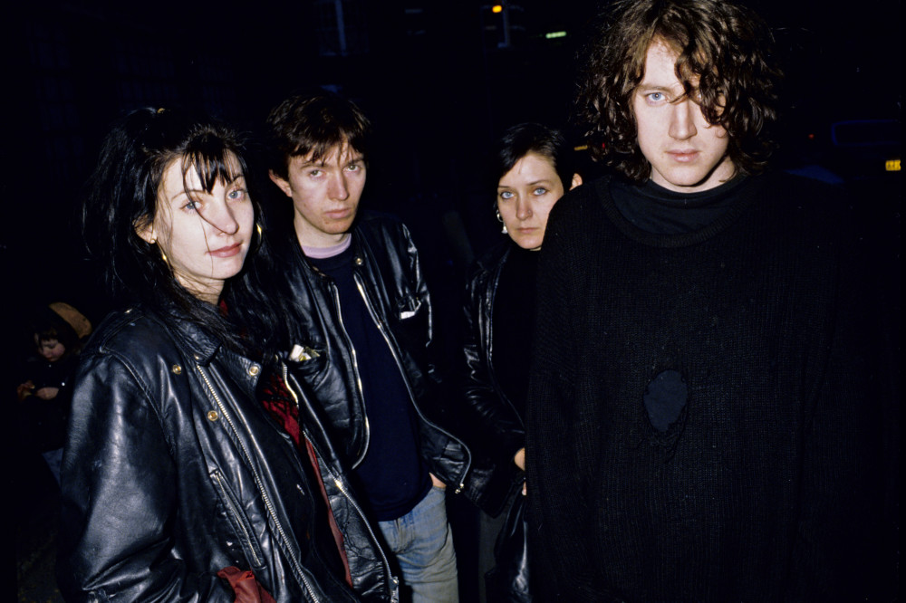
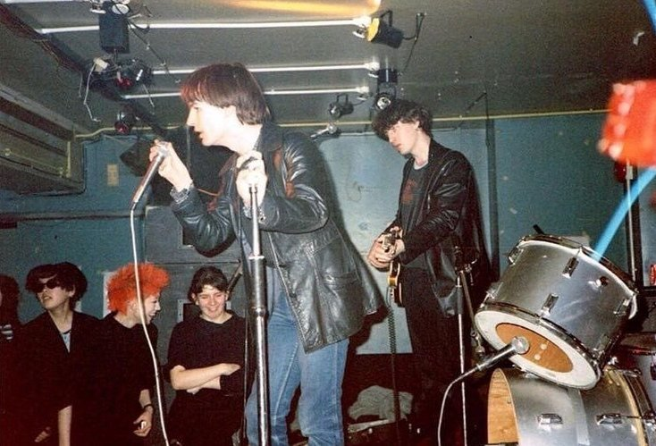
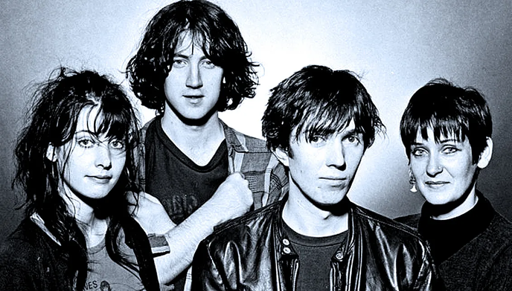
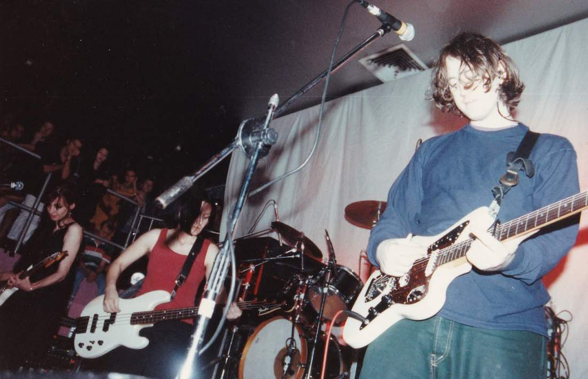

My Bloody Valentine es una banda de rock alternativo formada en 1983 en Dublín, Irlanda por Kevin Shields y Colm Ó Cíosóig. Influenciada por el post-punk, el rock experimental y el noise rock de bandas como Sonic Youth, quedaron establecidos como una leyenda del rock independiente, y máximos exponentes del shoegaze, siendo una gran inspiración e influencia para muchas bandas contemporáneas.
Marcaron fuertes tendencias y toda una forma de hacer música que se fundamenta en guitarras distorsionadas y semi-ambientales, con efectos de reverb, el uso del brazo de trémolo en las Fender Jaguar y Jazzmaster como un rasgo particular en el sonido, y voces femeninas frágiles y melódicas contrapuestas a ambientes extremadamente densos. Por eso, su guitarrista, Kevin Shields, es también una figura de la época, y es padre del modelo que siguen otras bandas similares como Lush. La banda empezó a disolverse tras dos años de su éxito de 1991 Loveless concluyendo su separación finalmente en 1997. En 2007, Shields anunció tras 10 años de separación que la banda volvería a reunirse y que estaría grabando nuevo material. El nombre de la banda es tomado de la película de horror de 1981 del mismo nombre.

My Bloody Valentine se formó en el año 1983 en Dublín, Irlanda, de la mano de Colm O'Cíosóig (batería) y Kevin Shields (guitarra), quienes en ese momento eran acompañados por el vocalista Dave Conway y la teclista Tina. En sus inicios, no faltaron los problemas, entre ellos el escaso éxito de su sucesión de EP y de sus dos primeros discos "This Is Your Bloody Valentine EP" (Tycoon, 1985) y "Geek! EP" (Fever, 1985), este último ya con Debbie Googe al bajo y sin la teclista Tina. Posteriormente lanzan "The New Record by My Bloody Valentine EP" (Kaleidoscope, 1986), "Sunny Sundae Smile EP" (Lazy, 1987), "Ecstasy EP" (Lazy, 1987), "Strawberry Wine EP" (Lazy, 1987) y el compilado "Ecstasy & Wine" (Lazy, 1989), hecho que los obligará a radicarse en Inglaterra. A finales de 1987 Dave Conway abandona el grupo y Bilinda Butcher ingresa como guitarrista y cantante.
Recogiendo influencias del dream pop de bandas como Cocteau Twins y del noise pop de bandas como The Jesus and Mary Chain, lograron crear un sonido único y característico.
En el año '88, ya una vez radicados en Inglaterra, específicamente en Londres, la prensa especializada comenzó a hablar de ellos con la publicación de Isn't Anything, su primer LP, caracterizado por un sonido algo más crudo y menos ambiental; y luego de varios EP más "You Made Me Realise EP" (Creation Records), "Feed Me With Your Kiss EP" (Creation Records) en 1988, "Glider EP" (Creation Records) en 1990 y "Tremolo EP" (Creation Records) en 1991, estarían listos para lanzar su disco más célebre.
La creación de Loveless, no fue como la de un disco más, ya que las 200.000 libras que se gastaron y la perfección que quería lograr Shields en su sonido, (se habla que el disco trabajaron alrededor de 14 ingenieros en sonido y que la banda se sometió a un arduo trabajo de grabación) dejaría consecuencias como la quiebra de su disquera y la posterior separación del grupo
Para el año 1993, Colm y Debbie abandonan el grupo, pero Kevin y Bilinda continúan realizando grabaciones y participando en discos como el homenaje al grupo post-punk Wire y el álbum benéfico "Peace Together" hasta 1996
Desde la separación, los miembros de la banda siguieron distintos trayectos. Kevin Shields colaboró con Primal Scream y con Sofia Coppola en la película "Lost In Translation". Por su parte, Colm O'Cíosóig trabajó junto a Hope Sandoval (ex-Mazzy Star) en The Warm Inventions y la bajista Debbie, luego de trabajar durante un tiempo como taxista de la noche gay de Londres, fundó el grupo Snowpony, junto a exintegrantes de Stereolab, Echobelly y Curve. Bilinda se dedicó principalmente a formar una familia y criar a sus hijos, aunque también participó en discos de Collapsed Lung y Dinosaur Jr.
Tras años y años de especulaciones, en una reciente entrevista para la página de internet VBS.TV, Kevin Shields confirma definitivamente la reunión de My Bloody Valentine, no sólo para dar una serie de conciertos en directo en Londres y participar de masivos festivales alrededor del mundo, sino también para publicar nuevo material de estudio, con la partición de los cuatro miembros de la formación clásica: Kevin Shields, Bilinda Butcher, Debbie Googe y Colm O'Cíosóig. En la entrevista que Kevin Shields ha concedido a Vice Broadcasting Service, habla del que será el primer disco de MBV desde “Loveless” (1991): “suena a la banda, diferente, pero no radicalmente distinto. La gente pensará 'sí, suena como MBV'”. Lo que confirma sus declaraciones a Magnet Magazine a principios de este año, cuando el mismo Shields aseguró: “es seguro al cien por cien que MBV grabará un nuevo disco, a no ser que estemos muertos o algo…
Tras 22 años, y por sorpresa, pusieron a la venta su tercer álbum de estudio, m b v, el 2 de febrero de 2013, disponible a través de su página web oficial, en CD, vinilo y descarga directa.2
En el año 2021 la banda firmó con Domino Records, y con esto se anunció que saldrán dos nuevos álbumes y que la discografía completa de la banda irlandesa estaría disponible en los distintos servicios de streaming.